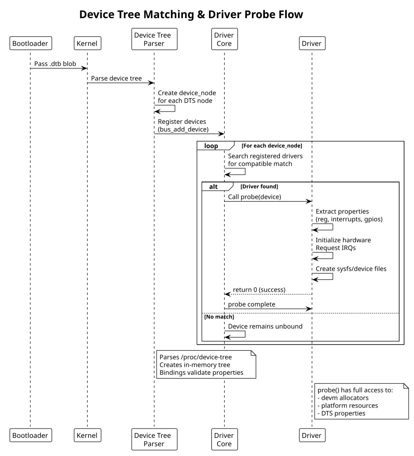

Device Tree (DTS) & Bindings
Table of Contents
Device tree source (DTS) format, bindings documentation, and integration with driver probe.
1. DTS Structure
Device tree describes hardware in declarative form. Bootloader passes compiled .dtb (device tree blob) to kernel.
// arch/arm/boot/dts/my-soc.dts
/dts-v1/;
/ {
compatible = "vendor,soc-name";
// Board/SOC-level node
soc {
compatible = "simple-bus";
// Peripheral node
gpio@1000 {
compatible = "vendor,gpio-controller";
reg = <0x1000 0x100>; // base address, size
#gpio-cells = <2>; // gpio phandle format
interrupt-controller;
#interrupt-cells = <2>;
interrupts = <42 0>; // IRQ number, flags
};
// Platform device with phandle reference
led-controller@2000 {
compatible = "vendor,led-controller";
reg = <0x2000 0x50>;
gpios = <&gpio 10 0>, // phandle reference
<&gpio 11 0>;
};
};
// Top-level chosen/cpus nodes omitted for brevity
};
2. Common Properties
| Property | Type | Purpose |
|---|---|---|
compatible |
string-list | Driver matching; first value must match driver's compatible string |
reg |
address/size cells | Memory-mapped registers |
interrupts |
interrupt specifier | IRQ assignment |
gpios |
phandle + specifier | GPIO references |
status |
string | "okay" (enabled), "disabled", "reserved" |
label |
string | Human-readable identifier |
3. Device Tree Bindings Documentation
Bindings define the contract between device tree and driver. Bindings live in kernel source:
- `Documentation/devicetree/bindings/` — per-subsystem binding specs
- Specifies: compatible strings, required/optional properties, interrupts, clocks, regulators, etc.
Example binding: `Documentation/devicetree/bindings/gpio/vendor,gpio-controller.txt`
GPIO Controller Binding
Required properties:
- compatible: "vendor,gpio-controller"
- reg: base address and size
- #gpio-cells: must be 2
- interrupt-controller: present if supports interrupts
- #interrupt-cells: 2 (gpio index, flags)
Optional properties:
- gpio-controller: presence marks as GPIO provider
- label: human name
Example:
gpio@1000 {
compatible = "vendor,gpio-controller";
reg = <0x1000 0x100>;
#gpio-cells = <2>;
interrupt-controller;
#interrupt-cells = <2>;
};
4. Driver Integration: Platform Device
Platform drivers probe via device tree match:
static const struct of_device_id my_gpio_dt_match[] = {
{ .compatible = "vendor,gpio-controller", .data = (void *)1 },
{ /* terminator */ },
};
MODULE_DEVICE_TABLE(of, my_gpio_dt_match);
static struct platform_driver my_gpio_driver = {
.driver = {
.name = "vendor-gpio",
.of_match_table = my_gpio_dt_match,
},
.probe = my_gpio_probe,
.remove = my_gpio_remove,
};
static int my_gpio_probe(struct platform_device *pdev)
{
struct device_node *np = pdev->dev.of_node;
struct resource *res;
// Extract reg property
res = platform_get_resource(pdev, IORESOURCE_MEM, 0);
void __iomem *base = devm_ioremap_resource(&pdev->dev, res);
// Extract GPIO properties
int ngpios = of_gpio_count(np);
// Extract interrupts
int irq = platform_get_irq(pdev, 0);
// Rest of probe logic...
return 0;
}
module_platform_driver(my_gpio_driver);
5. DTS Properties in Code
Common of_* functions to read DTS properties:
// Read string
const char *name;
of_property_read_string(np, "label", &name);
// Read u32 integer
u32 val;
of_property_read_u32(np, "reg", &val);
// Count cells
int count = of_gpio_count(np);
// Get phandle reference
struct device_node *ref = of_parse_phandle(np, "gpios", 0);
// Check property presence
bool has_interrupts = of_find_property(np, "interrupt-controller", NULL);
// Iterate children
struct device_node *child;
for_each_child_of_node(np, child) {
// process child nodes
}
6. DTS Compilation
Bootloader/build system compiles .dts → .dtb:
# Compile device tree
dtc -O dtb -o arch/arm/boot/dts/my-soc.dtb arch/arm/boot/dts/my-soc.dts
# Decompile for inspection
dtc -O dts -o my-soc-out.dts arch/arm/boot/dts/my-soc.dtb
7. Probe Flow
- Bootloader loads .dtb, passes to kernel
- Device tree parser creates device nodes
- Kernel matches device nodes against registered drivers (via
compatiblestring) - Driver's
probe()called for each matching device - Driver reads DTS properties, initializes hardware, creates sysfs/device files
8. Device Tree Matching Flow

9. See Also
- Kernel Module Fundamentals
- Platform Drivers — full platform driver example